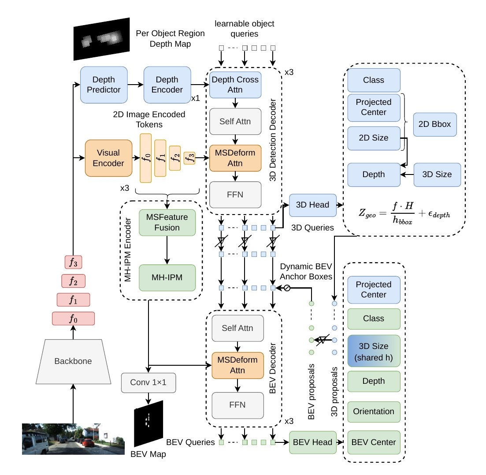

Abstract
Monocular 3D object detection methods increasingly rely on depth-guided transformers, but they operate entirely in the perspective image plane where spatial relationships are distorted by foreshortening. We propose MonoMIP, a dual-decoder framework that adds complementary 3D geometric reasoning through Bird’s-Eye View (BEV) features constructed via Multi-Height Inverse Perspective Mapping. We perform IPM at K elevation planes spanning ground to rooftop, producing an ordered stack of height-conditioned metric BEV features that reduces above-ground misprojection and exposes depth-dependent appearance variation across planes. A BEV decoder with multi-scale deformable attention aggregates this multi-height evidence per query, while a depth-guided 3D decoder provides complementary perspective-space predictions. Without extra training data, MonoMIP attains 25.84% Moderate AP3D|R40 on KITTI val and 21.66% on the official test set for Car, outperforming recent published monocular methods on both the KITTI and Waymo benchmarks.
Motivation
Leading monocular detectors such as MonoDETR and MonoDGP reason in the perspective image, where foreshortening distorts spatial relationships. A bird’s-eye view (BEV) keeps them metric. Instead of the learned lifting used by most BEV methods, MonoMIP builds on inverse perspective mapping (IPM), a projection with no learned parameters. Classical IPM assumes the ground is flat, so everything above the road (most of a car) lands in the wrong place.
MonoMIP relaxes this assumption by projecting image features onto several planes, from the ground to roof height. Above-ground parts land near their correct positions, and how an object’s features change from plane to plane depends on its depth, which gives the detector an additional geometric cue.
Method

A shared backbone feeds two decoders: a depth-guided 3D decoder that works in the perspective image, and a BEV decoder with multi-scale deformable attention that reads the multi-height BEV stack for each object query.

Results
KITTI test set, Car, IoU 0.7, AP3D|R40, methods without extra training data (leaderboard entry).
| Method | Venue | Easy | Moderate | Hard |
|---|---|---|---|---|
| MonoDETR | ICCV’23 | 25.00 | 16.47 | 13.58 |
| MonoDGP | CVPR’25 | 26.35 | 18.72 | 15.97 |
| MonoCoP | CVPR’26 | 27.54 | 19.11 | 16.33 |
| MonoIA* | CVPR’26 | 29.52 | 20.29 | 17.93 |
| MonoMIP (ours) | ACCV’26 | 30.85 | 21.66 | 18.77 |
* MonoIA also uses language/foundation-model conditioning. Full comparison, including val results, BEV AP, Pedestrian/Cyclist and Waymo, in the paper.
As of October 2026, this is the best result among published monocular methods without extra training data on KITTI test (Car, Moderate). Code and pretrained checkpoints are on GitHub.